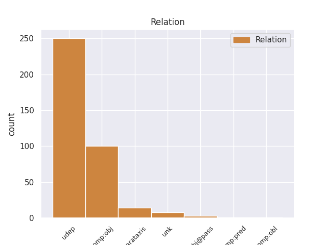
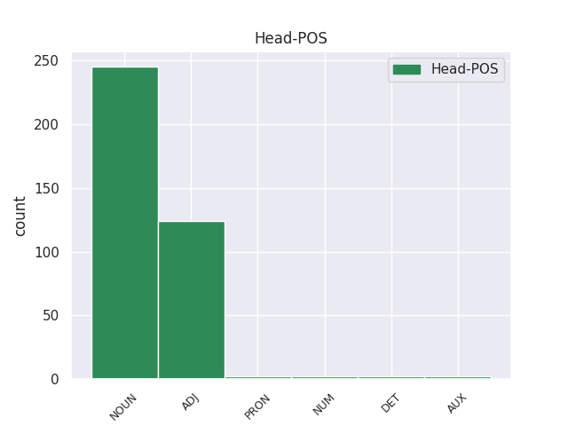
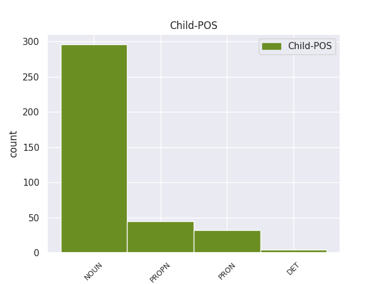

Distribution of features within this leaf



Agreement Rules sorted by frequency.
- When the dependent token is the direct object complements(comp:obj) of the head token, and the head token is ADJ and the dependent token is NOUN.
1 Vis _ _ _ _ 0 _ _ _
2 daugiau _ _ _ _ 0 _ _ _
3 duomenų _ _ _ _ 0 _ _ _
4 subjektų _ _ _ _ 0 _ _ _
5 kreipiasi _ _ _ _ 0 _ _ _
6 į _ _ _ _ 0 _ _ _
7 Inspekciją _ _ _ _ 0 _ _ _
8 norėdami _ _ _ _ 0 _ _ _
9 sužinoti _ _ _ _ 0 _ _ _
10 apie _ _ _ _ 0 _ _ _
11 įstatymų _ _ _ _ 0 _ _ _
12 jiems _ _ _ _ 0 _ _ _
13 suteiktas _ _ _ _ 0 _ _ _
14 teises _ _ _ _ 0 _ _ _
15 duomenų _ _ _ _ 0 _ _ _
16 apsaugos _ _ _ _ 0 _ _ _
17 srityje _ _ _ _ 0 _ _ _
18 , _ _ _ _ 0 _ _ _
19 apie _ _ _ _ 0 _ _ _
20 duomenų _ _ _ _ 0 _ _ _
21 valdytojų valdytojas NOUN dkt.vyr.dgs.K. Case=Gen|Gender=Masc|Number=Plur 22 comp:obj _ _
22 atliekamų atliekamas ADJ bdv.nelygin.vyr.dgs.K. Case=Gen|Definite=Ind|Degree=Pos|Gender=Masc|Number=Plur 0 _ _ _
23 duomenų _ _ _ _ 0 _ _ _
24 tvarkymo _ _ _ _ 0 _ _ _
25 veiksmų _ _ _ _ 0 _ _ _
26 teisėtumą _ _ _ _ 0 _ _ _
27 , _ _ _ _ 0 _ _ _
28 didėja _ _ _ _ 0 _ _ _
29 ir _ _ _ _ 0 _ _ _
30 visuomenės _ _ _ _ 0 _ _ _
31 informavimo _ _ _ _ 0 _ _ _
32 priemonių _ _ _ _ 0 _ _ _
33 susidomėjimas _ _ _ _ 0 _ _ _
34 Inspekcijos _ _ _ _ 0 _ _ _
35 vykdoma _ _ _ _ 0 _ _ _
36 veikla _ _ _ _ 0 _ _ _
37 . _ _ _ _ 0 _ _ _
1 JAV _ _ _ _ 0 _ _ _
2 ir _ _ _ _ 0 _ _ _
3 Lietuvos _ _ _ _ 0 _ _ _
4 vaikų _ _ _ _ 0 _ _ _
5 kai _ _ _ _ 0 _ _ _
6 kurių _ _ _ _ 0 _ _ _
7 skalių _ _ _ _ 0 _ _ _
8 įverčių _ _ _ _ 0 _ _ _
9 vidurkių _ _ _ _ 0 _ _ _
10 skirtumai _ _ _ _ 0 _ _ _
11 reikšmingi _ _ _ _ 0 _ _ _
12 , _ _ _ _ 0 _ _ _
13 be _ _ _ _ 0 _ _ _
14 to _ _ _ _ 0 _ _ _
15 , _ _ _ _ 0 _ _ _
16 daugumos dauguma NOUN dkt.mot.vns.K. Case=Gen|Gender=Fem|Number=Sing 19 udep _ _
17 skalių _ _ _ _ 0 _ _ _
18 Lietuvos _ _ _ _ 0 _ _ _
19 vaikų vaikas NOUN dkt.vyr.dgs.K. Case=Gen|Gender=Masc|Number=Plur 0 _ _ _
20 vidurkiai _ _ _ _ 0 _ _ _
21 , _ _ _ _ 0 _ _ _
22 palyginti _ _ _ _ 0 _ _ _
23 su _ _ _ _ 0 _ _ _
24 JAV _ _ _ _ 0 _ _ _
25 duomenimis _ _ _ _ 0 _ _ _
26 , _ _ _ _ 0 _ _ _
27 yra _ _ _ _ 0 _ _ _
28 aukštesni _ _ _ _ 0 _ _ _
29 , _ _ _ _ 0 _ _ _
30 tačiau _ _ _ _ 0 _ _ _
31 efekto _ _ _ _ 0 _ _ _
32 dydis _ _ _ _ 0 _ _ _
33 , _ _ _ _ 0 _ _ _
34 kai _ _ _ _ 0 _ _ _
35 atsižvelgiama _ _ _ _ 0 _ _ _
36 į _ _ _ _ 0 _ _ _
37 lytį _ _ _ _ 0 _ _ _
38 , _ _ _ _ 0 _ _ _
39 amžių _ _ _ _ 0 _ _ _
40 ir _ _ _ _ 0 _ _ _
41 šalį _ _ _ _ 0 _ _ _
42 , _ _ _ _ 0 _ _ _
43 yra _ _ _ _ 0 _ _ _
44 labai _ _ _ _ 0 _ _ _
45 mažas _ _ _ _ 0 _ _ _
46 , _ _ _ _ 0 _ _ _
47 t _ _ _ _ 0 _ _ _
48 . _ _ _ _ 0 _ _ _
49 y _ _ _ _ 0 _ _ _
50 . _ _ _ _ 0 _ _ _
51 mažesnis _ _ _ _ 0 _ _ _
52 nei _ _ _ _ 0 _ _ _
53 1 _ _ _ _ 0 _ _ _
54 proc _ _ _ _ 0 _ _ _
55 . _ _ _ _ 0 _ _ _
1 16 _ _ _ _ 0 _ _ _
2 . _ _ _ _ 0 _ _ _
3 Verslo _ _ _ _ 0 _ _ _
4 inkubatorius _ _ _ _ 0 _ _ _
5 – _ _ _ _ 0 _ _ _
6 viešoji _ _ _ _ 0 _ _ _
7 įstaiga _ _ _ _ 0 _ _ _
8 , _ _ _ _ 0 _ _ _
9 kurios _ _ _ _ 0 _ _ _
10 savininkė _ _ _ _ 0 _ _ _
11 arba _ _ _ _ 0 _ _ _
12 viena _ _ _ _ 0 _ _ _
13 iš _ _ _ _ 0 _ _ _
14 dalininkų _ _ _ _ 0 _ _ _
15 yra _ _ _ _ 0 _ _ _
16 valstybė valstybė NOUN dkt.mot.vns.V. Case=Nom|Gender=Fem|Number=Sing 0 _ _ _
17 ir _ _ _ _ 0 _ _ _
18 ( _ _ _ _ 0 _ _ _
19 arba _ _ _ _ 0 _ _ _
20 ) _ _ _ _ 0 _ _ _
21 savivaldybė _ _ _ _ 0 _ _ _
22 ir _ _ _ _ 0 _ _ _
23 kurios _ _ _ _ 0 _ _ _
24 tikslas tikslas NOUN dkt.vyr.vns.V. Case=Nom|Gender=Masc|Number=Sing 16 unk _ _
25 – _ _ _ _ 0 _ _ _
26 teikiant _ _ _ _ 0 _ _ _
27 viešąsias _ _ _ _ 0 _ _ _
28 paslaugas _ _ _ _ 0 _ _ _
29 verslui _ _ _ _ 0 _ _ _
30 , _ _ _ _ 0 _ _ _
31 sumažinti _ _ _ _ 0 _ _ _
32 verslą _ _ _ _ 0 _ _ _
33 pradedančių _ _ _ _ 0 _ _ _
34 įmonių _ _ _ _ 0 _ _ _
35 veiklos _ _ _ _ 0 _ _ _
36 riziką _ _ _ _ 0 _ _ _
37 ir _ _ _ _ 0 _ _ _
38 padėti _ _ _ _ 0 _ _ _
39 joms _ _ _ _ 0 _ _ _
40 įsitvirtinti _ _ _ _ 0 _ _ _
41 rinkoje _ _ _ _ 0 _ _ _
42 , _ _ _ _ 0 _ _ _
43 taip _ _ _ _ 0 _ _ _
44 pat _ _ _ _ 0 _ _ _
45 skatinti _ _ _ _ 0 _ _ _
46 smulkiojo _ _ _ _ 0 _ _ _
47 ir _ _ _ _ 0 _ _ _
48 vidutinio _ _ _ _ 0 _ _ _
49 verslo _ _ _ _ 0 _ _ _
50 subjektų _ _ _ _ 0 _ _ _
51 veiklos _ _ _ _ 0 _ _ _
52 plėtrą _ _ _ _ 0 _ _ _
53 . _ _ _ _ 0 _ _ _
1 Rengiantis _ _ _ _ 0 _ _ _
2 šiam _ _ _ _ 0 _ _ _
3 vertinimui _ _ _ _ 0 _ _ _
4 , _ _ _ _ 0 _ _ _
5 buvo _ _ _ _ 0 _ _ _
6 susipažinta _ _ _ _ 0 _ _ _
7 , _ _ _ _ 0 _ _ _
8 kaip _ _ _ _ 0 _ _ _
9 tvarkomi _ _ _ _ 0 _ _ _
10 asmenų _ _ _ _ 0 _ _ _
11 , _ _ _ _ 0 _ _ _
12 kurie _ _ _ _ 0 _ _ _
13 kreipiasi _ _ _ _ 0 _ _ _
14 dėl _ _ _ _ 0 _ _ _
15 vizų _ _ _ _ 0 _ _ _
16 išdavimo _ _ _ _ 0 _ _ _
17 , _ _ _ _ 0 _ _ _
18 duomenys _ _ _ _ 0 _ _ _
19 Lietuvos _ _ _ _ 0 _ _ _
20 Respublikos _ _ _ _ 0 _ _ _
21 generaliniame _ _ _ _ 0 _ _ _
22 konsulate _ _ _ _ 0 _ _ _
23 Kaliningrade _ _ _ _ 0 _ _ _
24 , _ _ _ _ 0 _ _ _
25 Lietuvos _ _ _ _ 0 _ _ _
26 Respublikos _ _ _ _ 0 _ _ _
27 ambasadoje ambasada NOUN dkt.mot.vns.Vt. Case=Loc|Gender=Fem|Number=Sing 0 _ _ _
28 Kijeve Kijevas PROPN dkt.tikr.vyr.vns.Vt. Case=Loc|Gender=Masc|Number=Sing 27 udep _ SpaceAfter=No
29 , _ _ _ _ 0 _ _ _
30 Užsienio _ _ _ _ 0 _ _ _
31 reikalų _ _ _ _ 0 _ _ _
32 ministerijos _ _ _ _ 0 _ _ _
33 Konsulinio _ _ _ _ 0 _ _ _
34 departamento _ _ _ _ 0 _ _ _
35 Vizų _ _ _ _ 0 _ _ _
36 skyriuje _ _ _ _ 0 _ _ _
37 bei _ _ _ _ 0 _ _ _
38 Migracijos _ _ _ _ 0 _ _ _
39 departamente _ _ _ _ 0 _ _ _
40 prie _ _ _ _ 0 _ _ _
41 Vidaus _ _ _ _ 0 _ _ _
42 reikalų _ _ _ _ 0 _ _ _
43 ministerijos _ _ _ _ 0 _ _ _
44 . _ _ _ _ 0 _ _ _
1 Vyras _ _ _ _ 0 _ _ _
2 , _ _ _ _ 0 _ _ _
3 išgirdęs _ _ _ _ 0 _ _ _
4 mano _ _ _ _ 0 _ _ _
5 sarkastišką _ _ _ _ 0 _ _ _
6 prunkštimą _ _ _ _ 0 _ _ _
7 , _ _ _ _ 0 _ _ _
8 kartu _ _ _ _ 0 _ _ _
9 su _ _ _ _ 0 _ _ _
10 erekcija _ _ _ _ 0 _ _ _
11 praranda _ _ _ _ 0 _ _ _
12 kretinizmo _ _ _ _ 0 _ _ _
13 šarvus _ _ _ _ 0 _ _ _
14 , _ _ _ _ 0 _ _ _
15 tampa _ _ _ _ 0 _ _ _
16 pažeidžiamas _ _ _ _ 0 _ _ _
17 ir _ _ _ _ 0 _ _ _
18 jaukus _ _ _ _ 0 _ _ _
19 , _ _ _ _ 0 _ _ _
20 kartais _ _ _ _ 0 _ _ _
21 netgi _ _ _ _ 0 _ _ _
22 apgailėtinas _ _ _ _ 0 _ _ _
23 , _ _ _ _ 0 _ _ _
24 valandėlę _ _ _ _ 0 _ _ _
25 mudu _ _ _ _ 0 _ _ _
26 netgi _ _ _ _ 0 _ _ _
27 sutariame _ _ _ _ 0 _ _ _
28 , _ _ _ _ 0 _ _ _
29 sutampame _ _ _ _ 0 _ _ _
30 vienas _ _ _ _ 0 _ _ _
31 su _ _ _ _ 0 _ _ _
32 kitu _ _ _ _ 0 _ _ _
33 , _ _ _ _ 0 _ _ _
34 bet _ _ _ _ 0 _ _ _
35 štai _ _ _ _ 0 _ _ _
36 jis _ _ _ _ 0 _ _ _
37 ir _ _ _ _ 0 _ _ _
38 vėl _ _ _ _ 0 _ _ _
39 ima _ _ _ _ 0 _ _ _
40 urgzti _ _ _ _ 0 _ _ _
41 , _ _ _ _ 0 _ _ _
42 judėti _ _ _ _ 0 _ _ _
43 , _ _ _ _ 0 _ _ _
44 raitytis _ _ _ _ 0 _ _ _
45 , _ _ _ _ 0 _ _ _
46 gašliai _ _ _ _ 0 _ _ _
47 pažeminęs _ _ _ _ 0 _ _ _
48 balsą _ _ _ _ 0 _ _ _
49 kažką _ _ _ _ 0 _ _ _
50 šnabžda _ _ _ _ 0 _ _ _
51 partnerei _ _ _ _ 0 _ _ _
52 , _ _ _ _ 0 _ _ _
53 mane _ _ _ _ 0 _ _ _
54 bjauriu _ _ _ _ 0 _ _ _
55 nuogu _ _ _ _ 0 _ _ _
56 užpakaliu _ _ _ _ 0 _ _ _
57 stumdamas _ _ _ _ 0 _ _ _
58 iš _ _ _ _ 0 _ _ _
59 lovos _ _ _ _ 0 _ _ _
60 , _ _ _ _ 0 _ _ _
61 kol _ _ _ _ 0 _ _ _
62 pagaliau _ _ _ _ 0 _ _ _
63 iškrentu _ _ _ _ 0 _ _ _
64 iš _ _ _ _ 0 _ _ _
65 jos _ _ _ _ 0 _ _ _
66 ir _ _ _ _ 0 _ _ _
67 netenku _ _ _ _ 0 _ _ _
68 sąmonės _ _ _ _ 0 _ _ _
69 iki _ _ _ _ 0 _ _ _
70 ryto _ _ _ _ 0 _ _ _
71 , _ _ _ _ 0 _ _ _
72 su _ _ _ _ 0 _ _ _
73 viltimi _ _ _ _ 0 _ _ _
74 , _ _ _ _ 0 _ _ _
75 kad _ _ _ _ 0 _ _ _
76 vieną _ _ _ _ 0 _ _ _
77 sykį _ _ _ _ 0 _ _ _
78 visa _ _ _ _ 0 _ _ _
79 tai _ _ _ _ 0 _ _ _
80 baigsis _ _ _ _ 0 _ _ _
81 , _ _ _ _ 0 _ _ _
82 nes _ _ _ _ 0 _ _ _
83 daiktas _ _ _ _ 0 _ _ _
84 , _ _ _ _ 0 _ _ _
85 vadinamas _ _ _ _ 0 _ _ _
86 vyru _ _ _ _ 0 _ _ _
87 , _ _ _ _ 0 _ _ _
88 labai _ _ _ _ 0 _ _ _
89 glaudžiai _ _ _ _ 0 _ _ _
90 susijęs _ _ _ _ 0 _ _ _
91 su _ _ _ _ 0 _ _ _
92 daiktu _ _ _ _ 0 _ _ _
93 , _ _ _ _ 0 _ _ _
94 kuris _ _ _ _ 0 _ _ _
95 vadinamas _ _ _ _ 0 _ _ _
96 kūnu _ _ _ _ 0 _ _ _
97 , _ _ _ _ 0 _ _ _
98 o _ _ _ _ 0 _ _ _
99 juk _ _ _ _ 0 _ _ _
100 nieko niekas PRON įv.K. Case=Gen|Definite=Ind|PronType=Neg 103 comp:obj _ _
101 pasaulyje _ _ _ _ 0 _ _ _
102 nėra _ _ _ _ 0 _ _ _
103 paprastesnio paprastas ADJ bdv.aukšt.vyr.vns.K. Case=Gen|Definite=Ind|Degree=Cmp|Gender=Masc|Number=Sing 0 _ _ _
104 už _ _ _ _ 0 _ _ _
105 tiesą _ _ _ _ 0 _ _ _
106 , _ _ _ _ 0 _ _ _
107 kad _ _ _ _ 0 _ _ _
108 visi _ _ _ _ 0 _ _ _
109 daiktai _ _ _ _ 0 _ _ _
110 dėvisi _ _ _ _ 0 _ _ _
111 . _ _ _ _ 0 _ _ _
1 Kaip _ _ _ _ 0 _ _ _
2 taikliai _ _ _ _ 0 _ _ _
3 pastebi _ _ _ _ 0 _ _ _
4 norvegų _ _ _ _ 0 _ _ _
5 socialinės _ _ _ _ 0 _ _ _
6 antropologijos _ _ _ _ 0 _ _ _
7 profesorius _ _ _ _ 0 _ _ _
8 T _ _ _ _ 0 _ _ _
9 . _ _ _ _ 0 _ _ _
10 H _ _ _ _ 0 _ _ _
11 . _ _ _ _ 0 _ _ _
12 Eriksenas _ _ _ _ 0 _ _ _
13 : _ _ _ _ 0 _ _ _
14 „ _ _ _ _ 0 _ _ _
15 laikraštis _ _ _ _ 0 _ _ _
16 buvo _ _ _ _ 0 _ _ _
17 ir _ _ _ _ 0 _ _ _
18 yra _ _ _ _ 0 _ _ _
19 tikrąja _ _ _ _ 0 _ _ _
20 žodžio _ _ _ _ 0 _ _ _
21 prasme _ _ _ _ 0 _ _ _
22 vienadienė _ _ _ _ 0 _ _ _
23 plaštakė plaštakė NOUN dkt.mot.vns.V. Case=Nom|Gender=Fem|Number=Sing 28 parataxis _ SpaceAfter=No
24 : _ _ _ _ 0 _ _ _
25 jo _ _ _ _ 0 _ _ _
26 gyvavimo _ _ _ _ 0 _ _ _
27 amžius _ _ _ _ 0 _ _ _
28 lygus lygus ADJ bdv.nelygin.vyr.vns.V. Case=Nom|Definite=Ind|Degree=Pos|Gender=Masc|Number=Sing 0 _ _ _
29 parai _ _ _ _ 0 _ _ _
30 “ _ _ _ _ 0 _ _ _
31 ( _ _ _ _ 0 _ _ _
32 2004 _ _ _ _ 0 _ _ _
33 : _ _ _ _ 0 _ _ _
34 83 _ _ _ _ 0 _ _ _
35 ) _ _ _ _ 0 _ _ _
36 . _ _ _ _ 0 _ _ _
1 Berniukų _ _ _ _ 0 _ _ _
2 ir _ _ _ _ 0 _ _ _
3 mergaičių _ _ _ _ 0 _ _ _
4 CBCL _ _ _ _ 0 _ _ _
5 , _ _ _ _ 0 _ _ _
6 TRF _ _ _ _ 0 _ _ _
7 ir _ _ _ _ 0 _ _ _
8 YSR _ _ _ _ 0 _ _ _
9 probleminių _ _ _ _ 0 _ _ _
10 skalių _ _ _ _ 0 _ _ _
11 vidurkiai _ _ _ _ 0 _ _ _
12 panašūs _ _ _ _ 0 _ _ _
13 į _ _ _ _ 0 _ _ _
14 kitų _ _ _ _ 0 _ _ _
15 šalių _ _ _ _ 0 _ _ _
16 tyrimų _ _ _ _ 0 _ _ _
17 duomenis _ _ _ _ 0 _ _ _
18 , _ _ _ _ 0 _ _ _
19 t _ _ _ _ 0 _ _ _
20 . _ _ _ _ 0 _ _ _
21 y _ _ _ _ 0 _ _ _
22 . _ _ _ _ 0 _ _ _
23 visų _ _ _ _ 0 _ _ _
24 amžiaus _ _ _ _ 0 _ _ _
25 grupių _ _ _ _ 0 _ _ _
26 mergaičių _ _ _ _ 0 _ _ _
27 internalių _ _ _ _ 0 _ _ _
28 sunkumų _ _ _ _ 0 _ _ _
29 įverčiai įvertis NOUN dkt.vyr.dgs.V. Case=Nom|Gender=Masc|Number=Plur 30 unk _ _
30 didesni didelis ADJ bdv.aukšt.vyr.dgs.V. Case=Nom|Definite=Ind|Degree=Cmp|Gender=Masc|Number=Plur 0 _ _ _
31 nei _ _ _ _ 0 _ _ _
32 berniukų _ _ _ _ 0 _ _ _
33 , _ _ _ _ 0 _ _ _
34 o _ _ _ _ 0 _ _ _
35 eksternalių _ _ _ _ 0 _ _ _
36 sunkumų _ _ _ _ 0 _ _ _
37 įverčiai _ _ _ _ 0 _ _ _
38 didesni _ _ _ _ 0 _ _ _
39 berniukų _ _ _ _ 0 _ _ _
40 nei _ _ _ _ 0 _ _ _
41 mergaičių _ _ _ _ 0 _ _ _
42 . _ _ _ _ 0 _ _ _
1 Beje _ _ _ _ 0 _ _ _
2 , _ _ _ _ 0 _ _ _
3 jos _ _ _ _ 0 _ _ _
4 gerokai _ _ _ _ 0 _ _ _
5 „ _ _ _ _ 0 _ _ _
6 pasikuklino _ _ _ _ 0 _ _ _
7 “ _ _ _ _ 0 _ _ _
8 , _ _ _ _ 0 _ _ _
9 pateikdamos _ _ _ _ 0 _ _ _
10 literatūros _ _ _ _ 0 _ _ _
11 sąraše _ _ _ _ 0 _ _ _
12 tik _ _ _ _ 0 _ _ _
13 vienintelę _ _ _ _ 0 _ _ _
14 Irenos _ _ _ _ 0 _ _ _
15 Juozeliūnienės _ _ _ _ 0 _ _ _
16 publikaciją _ _ _ _ 0 _ _ _
17 ( _ _ _ _ 0 _ _ _
18 Juozeliūnienė _ _ _ _ 0 _ _ _
19 , _ _ _ _ 0 _ _ _
20 I _ _ _ _ 0 _ _ _
21 . _ _ _ _ 0 _ _ _
22 2003 _ _ _ _ 0 _ _ _
23 . _ _ _ _ 0 _ _ _
24 Janas _ _ _ _ 0 _ _ _
25 Trostas Trostas PROPN dkt.tikr.vyr.vns.V. Case=Nom|Gender=Masc|Number=Sing 32 parataxis _ _
26 ir _ _ _ _ 0 _ _ _
27 šeimos _ _ _ _ 0 _ _ _
28 sociologija _ _ _ _ 0 _ _ _
29 : _ _ _ _ 0 _ _ _
30 Naujos _ _ _ _ 0 _ _ _
31 tyrimo _ _ _ _ 0 _ _ _
32 galimybės galimybė NOUN dkt.mot.dgs.V. Case=Nom|Gender=Fem|Number=Plur 0 _ _ _
33 . _ _ _ _ 0 _ _ _
34 Vilnius _ _ _ _ 0 _ _ _
35 , _ _ _ _ 0 _ _ _
36 Garnelis _ _ _ _ 0 _ _ _
37 ) _ _ _ _ 0 _ _ _
38 . _ _ _ _ 0 _ _ _
1 Dažnai _ _ _ _ 0 _ _ _
2 teismų _ _ _ _ 0 _ _ _
3 akiratin _ _ _ _ 0 _ _ _
4 patenka _ _ _ _ 0 _ _ _
5 nepilnamečiai _ _ _ _ 0 _ _ _
6 , _ _ _ _ 0 _ _ _
7 kurie kuris DET įv.vyr.dgs.V. Case=Nom|Definite=Ind|Gender=Masc|Number=Plur|PronType=Int 9 subj@pass _ _
8 pripažįstami _ _ _ _ 0 _ _ _
9 pakaltinami pakaltinamas ADJ bdv.nelygin.vyr.dgs.V. Case=Nom|Definite=Ind|Degree=Pos|Gender=Masc|Number=Plur 0 _ _ _
10 , _ _ _ _ 0 _ _ _
11 tačiau _ _ _ _ 0 _ _ _
12 jų _ _ _ _ 0 _ _ _
13 protinis _ _ _ _ 0 _ _ _
14 išsivystymas _ _ _ _ 0 _ _ _
15 ar _ _ _ _ 0 _ _ _
16 liguista _ _ _ _ 0 _ _ _
17 psichinė _ _ _ _ 0 _ _ _
18 būsena _ _ _ _ 0 _ _ _
19 leidžia _ _ _ _ 0 _ _ _
20 abejoti _ _ _ _ 0 _ _ _
21 jų _ _ _ _ 0 _ _ _
22 asmenybės _ _ _ _ 0 _ _ _
23 visavertiškumu _ _ _ _ 0 _ _ _
24 ir _ _ _ _ 0 _ _ _
25 gebėjimu _ _ _ _ 0 _ _ _
26 aiškiai _ _ _ _ 0 _ _ _
27 suvokti _ _ _ _ 0 _ _ _
28 savo _ _ _ _ 0 _ _ _
29 veiksmų _ _ _ _ 0 _ _ _
30 esmę _ _ _ _ 0 _ _ _
31 ir _ _ _ _ 0 _ _ _
32 juos _ _ _ _ 0 _ _ _
33 valdyti _ _ _ _ 0 _ _ _
34 , _ _ _ _ 0 _ _ _
35 todėl _ _ _ _ 0 _ _ _
36 straipsnyje _ _ _ _ 0 _ _ _
37 aptarti _ _ _ _ 0 _ _ _
38 ir _ _ _ _ 0 _ _ _
39 nepilnamečių _ _ _ _ 0 _ _ _
40 riboto _ _ _ _ 0 _ _ _
41 pakaltinamumo _ _ _ _ 0 _ _ _
42 klausimai _ _ _ _ 0 _ _ _
43 . _ _ _ _ 0 _ _ _
1 Visuomet _ _ _ _ 0 _ _ _
2 jaučiuosi _ _ _ _ 0 _ _ _
3 esąs būti AUX vksm.dlv.veik.es.vyr.vns.V. Case=Nom|Definite=Ind|Gender=Masc|Number=Sing|Polarity=Pos|Tense=Pres|VerbForm=Part|Voice=Act 0 _ _ _
4 tik _ _ _ _ 0 _ _ _
5 priedas priedas NOUN dkt.vyr.vns.V. Case=Nom|Gender=Masc|Number=Sing 3 comp:pred _ _
6 jų _ _ _ _ 0 _ _ _
7 salonuose _ _ _ _ 0 _ _ _
8 . _ _ _ _ 0 _ _ _
Disagree Examples:
1 Recenzija recenzija NOUN dkt.mot.vns.V. Case=Nom|Gender=Fem|Number=Sing 0 _ _ _
2 žurnale žurnalas NOUN dkt.vyr.vns.Vt. Case=Loc|Gender=Masc|Number=Sing 1 udep _ _
3 „ _ _ _ _ 0 _ _ _
4 Darbai _ _ _ _ 0 _ _ _
5 ir _ _ _ _ 0 _ _ _
6 Dienos _ _ _ _ 0 _ _ _
7 “ _ _ _ _ 0 _ _ _
8 ( _ _ _ _ 0 _ _ _
9 2008 _ _ _ _ 0 _ _ _
10 ) _ _ _ _ 0 _ _ _
1 Net _ _ _ _ 0 _ _ _
2 keista _ _ _ _ 0 _ _ _
3 , _ _ _ _ 0 _ _ _
4 turint _ _ _ _ 0 _ _ _
5 omeny _ _ _ _ 0 _ _ _
6 , _ _ _ _ 0 _ _ _
7 kiek _ _ _ _ 0 _ _ _
8 vietos vieta NOUN dkt.mot.vns.K. Case=Gen|Gender=Fem|Number=Sing 0 _ _ _
9 istorijoje istorija NOUN dkt.mot.vns.Vt. Case=Loc|Gender=Fem|Number=Sing 8 udep _ _
10 skirta _ _ _ _ 0 _ _ _
11 tarptautiniams _ _ _ _ 0 _ _ _
12 santykiams _ _ _ _ 0 _ _ _
13 , _ _ _ _ 0 _ _ _
14 kad _ _ _ _ 0 _ _ _
15 neišryškintas _ _ _ _ 0 _ _ _
16 toks _ _ _ _ 0 _ _ _
17 svarbus _ _ _ _ 0 _ _ _
18 Lietuvos _ _ _ _ 0 _ _ _
19 – _ _ _ _ 0 _ _ _
20 SSRS _ _ _ _ 0 _ _ _
21 santykių _ _ _ _ 0 _ _ _
22 raidai _ _ _ _ 0 _ _ _
23 veiksnys _ _ _ _ 0 _ _ _
24 kaip _ _ _ _ 0 _ _ _
25 teisinis _ _ _ _ 0 _ _ _
26 dialogas _ _ _ _ 0 _ _ _
27 tarp _ _ _ _ 0 _ _ _
28 Lietuvos _ _ _ _ 0 _ _ _
29 ir _ _ _ _ 0 _ _ _
30 Maskvos _ _ _ _ 0 _ _ _
31 . _ _ _ _ 0 _ _ _
1 Net _ _ _ _ 0 _ _ _
2 keista _ _ _ _ 0 _ _ _
3 , _ _ _ _ 0 _ _ _
4 turint _ _ _ _ 0 _ _ _
5 omeny _ _ _ _ 0 _ _ _
6 , _ _ _ _ 0 _ _ _
7 kiek _ _ _ _ 0 _ _ _
8 vietos _ _ _ _ 0 _ _ _
9 istorijoje _ _ _ _ 0 _ _ _
10 skirta _ _ _ _ 0 _ _ _
11 tarptautiniams _ _ _ _ 0 _ _ _
12 santykiams _ _ _ _ 0 _ _ _
13 , _ _ _ _ 0 _ _ _
14 kad _ _ _ _ 0 _ _ _
15 neišryškintas _ _ _ _ 0 _ _ _
16 toks _ _ _ _ 0 _ _ _
17 svarbus svarbus ADJ bdv.nelygin.vyr.vns.V. Case=Nom|Definite=Ind|Degree=Pos|Gender=Masc|Number=Sing 0 _ _ _
18 Lietuvos _ _ _ _ 0 _ _ _
19 – _ _ _ _ 0 _ _ _
20 SSRS _ _ _ _ 0 _ _ _
21 santykių _ _ _ _ 0 _ _ _
22 raidai raida NOUN dkt.mot.vns.N. Case=Dat|Gender=Fem|Number=Sing 17 comp:obj _ _
23 veiksnys _ _ _ _ 0 _ _ _
24 kaip _ _ _ _ 0 _ _ _
25 teisinis _ _ _ _ 0 _ _ _
26 dialogas _ _ _ _ 0 _ _ _
27 tarp _ _ _ _ 0 _ _ _
28 Lietuvos _ _ _ _ 0 _ _ _
29 ir _ _ _ _ 0 _ _ _
30 Maskvos _ _ _ _ 0 _ _ _
31 . _ _ _ _ 0 _ _ _
1 SSRS _ _ _ _ 0 _ _ _
2 Konstitucijos _ _ _ _ 0 _ _ _
3 keitimas _ _ _ _ 0 _ _ _
4 turėjo _ _ _ _ 0 _ _ _
5 ne _ _ _ _ 0 _ _ _
6 išplėsti _ _ _ _ 0 _ _ _
7 respublikų _ _ _ _ 0 _ _ _
8 teises _ _ _ _ 0 _ _ _
9 , _ _ _ _ 0 _ _ _
10 bet _ _ _ _ 0 _ _ _
11 įtvirtinti _ _ _ _ 0 _ _ _
12 dešimtmečiais _ _ _ _ 0 _ _ _
13 susiklosčiusią _ _ _ _ 0 _ _ _
14 sistemą _ _ _ _ 0 _ _ _
15 , _ _ _ _ 0 _ _ _
16 grįstą _ _ _ _ 0 _ _ _
17 SSRS _ _ _ _ 0 _ _ _
18 centro _ _ _ _ 0 _ _ _
19 ir _ _ _ _ 0 _ _ _
20 rusų _ _ _ _ 0 _ _ _
21 dominavimu dominavimas NOUN dkt.vyr.vns.Įn. Case=Ins|Gender=Masc|Number=Sing 0 _ _ _
22 sovietinėje _ _ _ _ 0 _ _ _
23 imperijoje imperija NOUN dkt.mot.vns.Vt. Case=Loc|Gender=Fem|Number=Sing 21 udep _ SpaceAfter=No
24 , _ _ _ _ 0 _ _ _
25 o _ _ _ _ 0 _ _ _
26 deklaratyvias _ _ _ _ 0 _ _ _
27 sąjunginių _ _ _ _ 0 _ _ _
28 respublikų _ _ _ _ 0 _ _ _
29 teises _ _ _ _ 0 _ _ _
30 gerokai _ _ _ _ 0 _ _ _
31 sumažinti _ _ _ _ 0 _ _ _
32 . _ _ _ _ 0 _ _ _
1 Kai _ _ _ _ 0 _ _ _
2 kurie _ _ _ _ 0 _ _ _
3 teiginiai _ _ _ _ 0 _ _ _
4 gana _ _ _ _ 0 _ _ _
5 ginčytini _ _ _ _ 0 _ _ _
6 , _ _ _ _ 0 _ _ _
7 pavyzdžiui pavyzdys NOUN dkt.vyr.vns.N. Case=Dat|Gender=Masc|Number=Sing 9 parataxis _ SpaceAfter=No
8 , _ _ _ _ 0 _ _ _
9 sakinys sakinys NOUN dkt.vyr.vns.V. Case=Nom|Gender=Masc|Number=Sing 0 _ _ _
10 : _ _ _ _ 0 _ _ _
11 Sąjūdžio _ _ _ _ 0 _ _ _
12 „ _ _ _ _ 0 _ _ _
13 Iniciatyvinė _ _ _ _ 0 _ _ _
14 grupė _ _ _ _ 0 _ _ _
15 , _ _ _ _ 0 _ _ _
16 galima _ _ _ _ 0 _ _ _
17 sakyti _ _ _ _ 0 _ _ _
18 , _ _ _ _ 0 _ _ _
19 atstovavo _ _ _ _ 0 _ _ _
20 Tarybų _ _ _ _ 0 _ _ _
21 Lietuvos _ _ _ _ 0 _ _ _
22 identitetui _ _ _ _ 0 _ _ _
23 “ _ _ _ _ 0 _ _ _
24 . _ _ _ _ 0 _ _ _